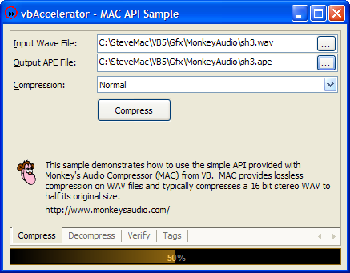
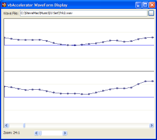
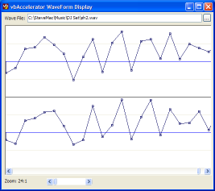

Sample APE File (1M)
Sample APE File (1M)
 VB5 MAC Sample (74K)
VB5 MAC Sample (74K)
 VB6 MAC Sample (70K)
VB6 MAC Sample (70K)
 15 Apr 2004
15 Apr 2004
First Posted
 Subclassing Without The Crashes
Subclassing Without The Crashes
 vbAccelerator Visual Studio Style Tab Control
vbAccelerator Visual Studio Style Tab Control

Lossless Audio Compression
Reduce the size of wave files by 40-45% without any data loss
As hard disk sizes increase, the requirement to perform lossy compression on digital audio files is reducing. This article looks at some of the code available to perform lossless compression of WAV files and demonstrates how to encode and decode files in VB using Monkey's Audio Compressor.
On Lossless Compression
Compressing audio data without losing information is a difficult task to do well. Unlike text documents and image diagrams, there are often few short-length repetitive features in an audio waveform, which makes run-length encoding less than effective. For this reason most popular audio compression formats such as MP3, Atrac and WMx use psycho-acoustic principles to remove information which in theory the ear cannot hear anyway. These formats work like JPG image files and are lossy so that repeatedly encoding, decoding then re-encoding the same data will result in progessive quality loss.
There are some features of audio data which indicate that some compression is possible. Firstly, in a stereo waveform, there is often a strong correlation between the data in the two channels. Secondly, musical audio data is rarely random, and neighbouring samples are usually closer together than the entire range of the sample (here we are ignoring some of the output of artists like Kid606 and Girltalk):
0.3s of audio data compared: Top waveform is the chorus of Carly Simon's "You're So Vain", Bottom is Girltalk's "Tony Bennett Could Never Write My Theme Music Because He's A Pussy"
The reasons for these correlations arise from the way human hearing works and how that relates to the frequency of a sound:
- Because ears are relatively closely spaced and the waveform for low notes is at a low frequency, it is not possible to make a spacial determination of the source of bass notes. For this reason audio systems can often get by with a single speaker for deep bass. In most recordings the lower frequencies will tend to be correlated across all channels; this also helps to prevent anti-phase problems where the bass from one channel cancels the bass from another out. Instruments and parts which should appear at the centre of a stereo recording will have identical components in each channel.
- The ear is less responsive to low frequencies than mid-frequency ones. Hence the amplitude of a low frequency waveform needs to be greater than one for a mid frequency waveform. This often results in portions of audio waveforms having the appearance of a large sine wave with smaller noise components applied over the top. The noise components perturb the overall amplitude but most often by far less than the entire range.
It's not easy though. Firstly, even though typically there are small changes, sometimes the changes are much less small, as you can see from these two waveforms; both are from electro tunes, and despite appearances the second is actually much less hardcore than the first:
'Easy' to compress Wave Samples: adjacent samples are close and stereo samples are correlated.
Harder to compress Wave Samples with more than 50% difference between adjacent samples and reduced stereo correlation.
Secondly, in any digital system, removing 1-bit halves the number of values which can be represented. So a 10% change in a 16bit signal still requires 13 bits to represent, which is only 19% compression. Therefore a naive scheme, which requires all changes to be <= +/-5%, would not do particularly well in compressing a file. The chances of all changes fitting this criteria are unfortunately slight, so it not only doesn't compress very well, it probably doesn't work either.
More intelligent compression is possible. Techniques which use an intelligent tagging scheme to encode deltas and use some form of predictive techniques can be put together that achieve around 40 - 45% compression. At the end of 2004, a standard which uses a predictive entropy-based encoding scheme is going to be added to MP4. Until then, however, there are a variety of other options, the main candidates being:
- Matthew T Ashland's Monkey's Audio
At the time of writing, this appears to achieve the best compression. Source and easy to use SDK are provided, but it has a difficult licence (see later for more). - Conifer Software's WavPack
Source available and free to use; compression about 4% off Monkey's Audio. - FLAC (Free Lossless Audio Codec)
Open-source and free to use; compression better than WavPack but not as good as Monkey's Audio. - SoftSound's Shorten
Used in a number of professional products, however source not easily available.
The following sample looks at using the SDK available for from Monkey's Audio site.
On Monkey's Audio
Monkey's Audio is one of the most effective compression algorithms currently available both in compression ratios and implementation efficiency. Its also quite a lot of fun, mainly thanks to a cool SDK, a pervading Monkey theme and some fun about "PolkaMonkey" in which the author suggests he has discovered a way to perform 10:1 lossless audio compression, but he can't provide any details because...
The licence to Monkey's audio is also rather amusing. Unusually, it actually prohibits use of the software provided in the downloads without first obtaining express written permission from the author to do so, assuming that Windows can be described as a "program". Even if you don't regard Windows as a program, then it's hard to see how using the provided Winamp plugin within, erm, Winamp does not represent "using the software in another program". More unusually, if you agree to the licence then you also agree that "all rights not expressly granted here are reserved by Matthew T. Ashland". I'm not sure what Mr. Ashland will do with my rights to a fair trial, privacy and so on but now they are reserved by him. I do hope he's not the death penalty type.
Anyway, I believe the intention is that if you intend to use the software for any use other than personal or educational you need to obtain permission first. These kinds of licence terms also mean you should consider before using the format for anything. For example, you may, like me, own digital audio media which is around 12 years old. One would hope 12 years from now that you could still use such media, but this may not be the case for MAC files. For example, if you find the supplied software is inappropriate or does not run on a particular machine you may not be granted a licence to do anything about it, consigning any data you might have using the format to digital hell (it can then join anything else you've got that happens to include DRM, since even if it isn't purposefully designed to self-destruct just when you think you might be half liking it, then you'll probably make a tiny mistake during a machine upgrade or it'll crash and you'll never *ever* be able to access it again). In the case of Carly Simon's "You're So Vain" that might not prove to be such a problem; but nevertheless...
A future update of this article is going to look at FLAC instead because the licence agreement is more amenable.
Using Monkey's Audio
Monkey's Audio file format supports compression, decompression, file verification and MP3 ID3v1 tags. The compression, decompression and verification functions are available in two flavours: a streaming flavour, which allows you to source each block of audio data for compression/decompression and then pass it into the algorithm, and a callback type, which operates on files and allows you to display a progress bar and cancel the operation. The callback style is simpler to use so I've used that for this sample. It also kindly runs on a background thread and pumps messages through the message loop so that the application stays responsive whilst processing is being performed.
To see how it works, I'll briefly cover implementing compression using the MAC API. To compress a file using the simple API needs only a single API declare:
Private Declare Function CompressFile Lib "macdll" ( _
ByVal pInputFile As Long, _
ByVal pOutputFile As Long, _
ByVal nCompressionLevel As Long, _
ByRef pPercentageDone As Long, _
ByVal pfnProgressCallback As Long, _
ByRef pKillFlag As Long) As Long
The parameters are as follows:
| Parameter | Description |
| pInputFile | The file to compress, as a pointer to a null-terminated array of ASCII bytes |
| pOutputFile | The ouput file, as a pointer to a null-terminated array of ASCII bytes |
| nCompressionLevel | One of the MAC compression levels:
|
| pPercentageDone | A pointer to a long variable which is updated with the percentage complete as compression is performed. |
| pfnProgressCallback | A pointer to a function which is called as compression is performed. The
function which is called must be a subroutine with a single long parameter
which contains the percentage complete:
Private Sub ProgressCallback(ByVal nPercentageDone As Long) |
| pKillFlag | A pointer to a long variable which is polled at intervals to check whether processing should be stopped. When this variable is set to 0 (false) the processing continues; if set to 1 (true) then the processing is stopped. |
Implementing the API therefore requires a module to hold the function to callback to (unless you were to implement this using a thunk) and some code to call the routine and maintain the two variables which are pointed to whilst an operation is in progress. In this sample, all the calls to the MAC API are wrapped into the class cMACAudioSimple with a supporting module mMACAudio. These variables are therefore declared in the class:
' Pointer to the callback function Private m_lPtrProgress As Long ' Long value to maintain the kill state Private m_pKillFlag As Long ' Long value to maintain percentage done Private m_pPercentDone As Long ' Whether an operation is in progress or not Private m_bOperationInProgress As Boolean ' Variables to allow file names and compression levels to ' be set through properties: Private m_sFileNameApe As String Private m_sFileNameWav As String Private m_eCompressionLevel As EMacCompressionLevel
The next part is to compress the file. When you call the API compress method, the VB code appears to stop executing at that point until compression is complete; however, since the call pumps messages through the message loop the UI stays responsive and other code in the application can be run. The code for compression therefore looks like this:
Public Function Compress() As Boolean
If (m_bOperationInProgress) Then
' Do not allow multiple operations:
pErr 3, False
Exit Function
End If
' Check input file exists:
If (FileExists(m_sFileNameApe)) Then
pErr 2, False
Else
' Check output file does not exist:
If Not (FileExists(m_sFileNameWav)) Then
pErr 1, False
Else
' Indicate an operation is in progress
m_bOperationInProgress = True
' Set up the callback pointer:
mMACAudio.MACAudio = Me
' Initialise percent done/kill flag
m_pPercentDone = 0
m_pKillFlag = 0
' Convert file names to arrays of ASCII bytes:
Dim bFileIn() As Byte
bFileIn = StrConv(m_sFileNameWav, vbFromUnicode)
ReDim Preserve bFileIn(0 To UBound(bFileIn) + 1) As Byte
Dim bFileOut() As Byte
bFileOut = StrConv(m_sFileNameApe, vbFromUnicode)
ReDim Preserve bFileOut(0 To UBound(bFileOut) + 1) As Byte
' Compress the file:
Dim lR As Long
lR = CompressFile(VarPtr(bFileIn(0)), VarPtr(bFileOut(0)), _
m_eCompressionLevel, _
m_pPercentDone, m_lPtrProgress, m_pKillFlag)
If Not (lR = 0) Then
If Not (lR = ERROR_USER_STOPPED_PROCESSING) Then
pErr lR, True
End If
Else
Compress = True
End If
m_bOperationInProgress = False
RaiseEvent Complete
End If
End If
End Function
Setting up the callback pointer is achieved this code in the module:
Private m_c As cMACAudioSimple Public Property Let MACAudio(c As cMACAudioSimple) Set m_c = c m_c.SetProgressCallbackPtr AddressOf ProgressCallback End Property Private Sub ProgressCallback(ByVal nPercentageDone As Long) ' m_c.ProgressCallback nPercentageDone ' End Sub
And this code in the class to action the callback:
Friend Sub ProgressCallback(ByVal nPercentageDone As Long)
'
Dim bCancel As Boolean
bCancel = False
' Note percent done is stored as a long between 0 and 1E5:
RaiseEvent Progress(nPercentageDone / 100000#, bCancel)
If (bCancel) Then
m_pKillFlag = 1
End If
'
End Sub
With this in place, client code can compress files through a handful of calls to the class:
Private WithEvents m_cMACAudio As cMACAudioSimple
Private Sub Compress( _
ByVal sWavFile As String, _
ByVal sApeFile As String, _
ByVal eCompression As EMacCompressionLevel _
)
m_cMACAudio.CompressionLevel = eCompression
m_cMACAudio.WavFileName = sWavFile
m_cMACAudio.ApeFileName = sApeFile
m_cMACAudio.Compress
End Sub
Private Sub m_cMACAudio_Progress( _
ByVal nPercentDone As Single, _
bCancel As Boolean)
'
' Show progress and set bCancel flag if needed here
'
End Sub
The only thing to note is that you should make sure that any operation in progress is cancelled prior to closing the application. The sample application also includes code for decompression, verification and getting/setting the ID3 tag associated with the APE file.
Conclusion
This article has taken a look at some lossless wave compression samples and provides a sample implementation using Monkey's Audio.